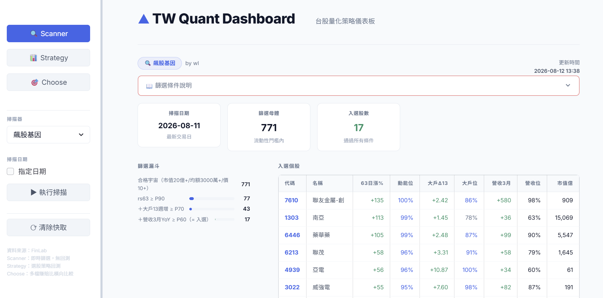

作品 · 量化投資
台股量化策略儀表板
2026.07 · 個人專案

FIG. 34 — 產品主畫面
關於這個作品
台股量化策略儀表板將策略研究、每日掃描與回測結果集中在同一個操作介面。
使用者可切換不同 scanner 與策略，查看候選股、持股與績效，並在 Choose 比較頁面交叉比較多檔標的的決策資訊。
作品亮點
參數化 scanner，快速檢視台股候選標的
整合策略持股、績效與回測結果
多檔比較介面，支援研究與決策判讀